📖 このライブラリについて
高校生がサイバーセキュリティの面白さや重要性に触れ、将来の情報科学系・工学系大学への進学やセキュリティ専門職を目指すための入門ライトノベルです。
第1部（第1話〜第15話）：橘 葵＆城崎 悠真が、パスワード認証から暗号、クラウド、AI防御までの基礎原理を習得して大学進学へ。
第2部 先端編（第16話〜第20話）：新入生の神崎 蓮＆白石 結衣が、IoT、ゼロトラスト、ハードウェア解析、社会重要インフラ防御に挑む！
第2部 横浜国大SPIRAL探訪編（第21話〜第42話）：暗号数理（四方教授）、IoT・マルウェア解析（吉岡教授・イン特任准教授・佐々木准教授）など最新研究論文の知見を高校生向けにストーリー化！
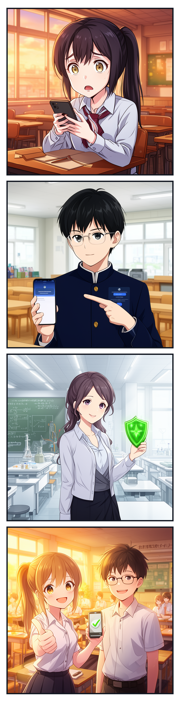
秘密の合言葉と見えない壁 〜パスワード認証と多要素認証の仕組み〜
学習テーマ: 認証の3要素（知識・所持・生体）、多要素認証（MFA）、アカウントリスト攻撃
小説と図解を読む →偽りの手紙と本物の目印 〜フィッシング詐欺の見抜き方とURLの秘密〜
学習テーマ: スミッシング、ソーシャルエンジニアリング、URL階層構造、電子証明書（HTTPS）の真実
小説と図解を読む →街角の電波は誰のもの？ 〜公衆無線LANの危険性と通信の暗号化（HTTPS）〜
学習テーマ: フリーWi-Fi、盗聴と中間者攻撃（MitM）、TLS暗号化トンネル、VPN
小説と図解を読む →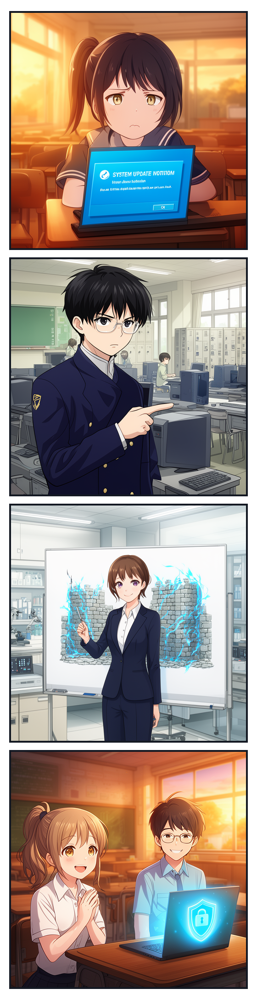
忍び寄るトロイの木馬 〜マルウェアの種類とソフトウェア更新の真実〜
学習テーマ: マルウェア4分類（ウイルス・ワーム・トロイ・ランサムウェア）、脆弱性とパッチ適用
小説と図解を読む →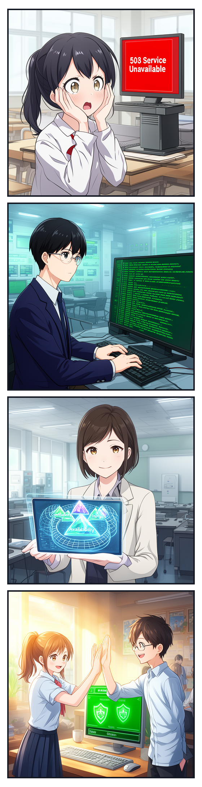
三つの宝玉を守る城壁 〜情報セキュリティの3大要素（CIA）と多層防御〜
学習テーマ: CIA（機密性・完全性・可用性）、DDoS攻撃、多層防御の同心円モデル
小説と図解を読む →データベースの合言葉と呪文の罠 〜SQLインジェクションと安全なプログラミング〜
学習テーマ: SQLインジェクション攻撃、文字列連結の脆弱性、プレースホルダ（バインド機構）
小説と図解を読む →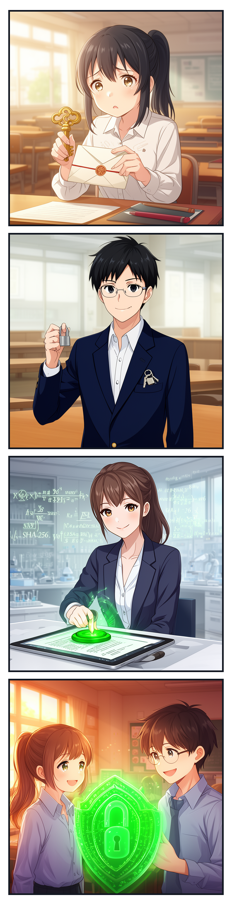
割れない南京錠と魔法の印鑑 〜公開鍵暗号とデジタル署名の数理〜
学習テーマ: 鍵配送問題、公開鍵暗号の鍵ペア、デジタル署名（電子署名）、SHA-256ハッシュ関数
小説と図解を読む →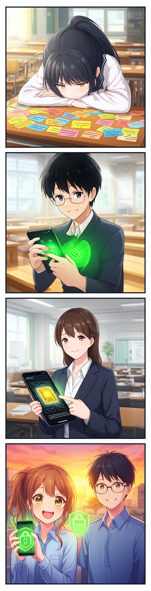
パスワードを捨てる日 〜生体認証とパスキー（FIDO2）が拓く未来〜
学習テーマ: パスキー（Passkey）、FIDO2 / WebAuthn、公開鍵認証、Secure Enclave、パスワードレス認証
小説と図解を読む →見えない鎖の綻び 〜サプライチェーン攻撃とソフトウェアの原材料表示（SBOM）〜
学習テーマ: サプライチェーン攻撃、委託先経由侵入、オープンソース汚染、SBOM（ソフトウェア部品構成表）
小説と図解を読む →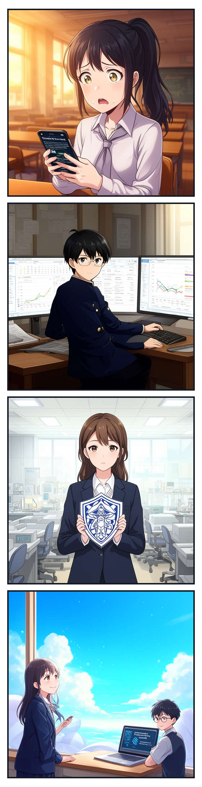
ゼロの日を越える翼 〜ゼロデイ脆弱性と世界を守るホワイトハッカー〜
学習テーマ: ゼロデイ攻撃（0-day）、協調的脆弱性開示（CVD）、CVE番号、米CISA KEVカタログ、倫理的ハッカー
小説と図解を読む →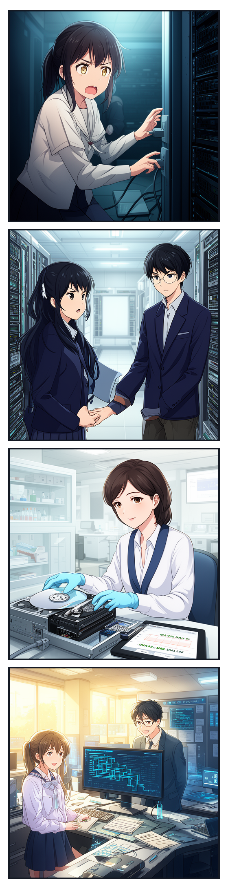
砂浜の足跡と電子の鑑識官 〜デジタル・フォレンジックと不正アクセス禁止法〜
学習テーマ: デジタル・フォレンジック、ライトブロッカー、ハッシュ値照合、不正アクセス禁止法、サイバー警察・CSIRT
小説と図解を読む →世界を繋ぐバケツリレー 〜家庭・学校のLAN、ルーターとDNSの秘密〜
学習テーマ: LANとWAN、プライベートIPとグローバルIP、ルーター（NAT/NAPT）、DNS名前解決、初期ファイアウォール
小説と図解を読む →旗を掲げる守護者たち 〜サイバーセキュリティ競技（CTF）と未来への扉〜
学習テーマ: CTF（Capture The Flag）競技、5大ジャンル（Web, Crypto, Reversing, Forensics, Pwn）、大学情報学部進路、CISO
小説と図解を読む →見えない空の保管庫 〜クラウドセキュリティと責任共有モデル〜
学習テーマ: クラウドサービス（IaaS/PaaS/SaaS）、責任共有モデル、IAM最小権限の原則、公開バケット設定ミス防止
小説と図解を読む →知性をまとう盾と矛 〜人工知能（AI）の悪用脅威と防衛の未来（第1部 完結）〜
学習テーマ: AI時代の脅威（プロンプト注入・ディープフェイク・データ汚染） vs AI自律防御、人間の倫理と知性、第1部堂々完結
小説と図解を読む →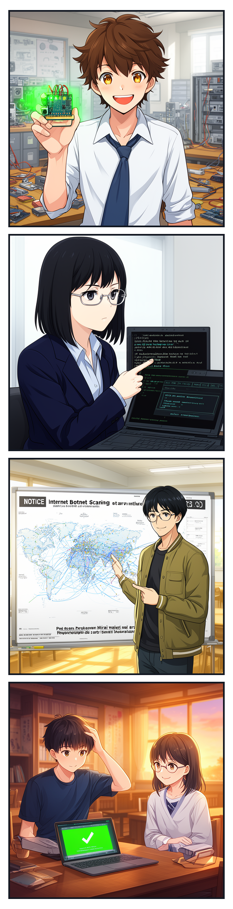
街角の監視者たち 〜スマート家電の隙と見えないボットネット〜
学習テーマ: 第2部開幕、IoT初期パスワード放置、Miraiボットネット、NOTICEプロジェクト、VLANセグメント分離
小説と図解を読む →城壁のない砦 〜ゼロトラストと「決して信頼しない」約束〜
学習テーマ: 境界型防御の破綻、内部横展開（ラテラルムーブメント）、NIST SP 800-207ゼロトラスト原則、マイクロセグメンテーション
小説と図解を読む →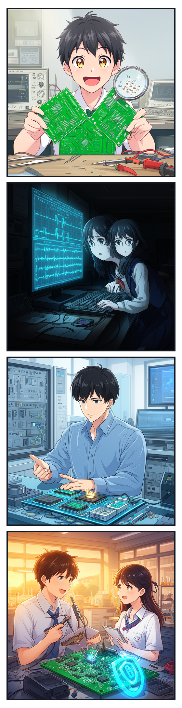
基板の上の囁き 〜物理端子ハッキングと差分電力解析の罠〜
学習テーマ: 物理デバッグ端子（UART/JTAG）、Root権限奪取、サイドチャネル攻撃（差分電力解析 DPA）、セキュアブート
小説と図解を読む →秘密を明かさぬ計算 〜完全準同型暗号と差分プライバシーの魔法〜
学習テーマ: プライバシー強化技術（PETs）、完全準同型暗号（FHE：暗号化したまま演算）、差分プライバシー（DP）、秘密計算
小説と図解を読む →走るネットワークと灯火の防衛 〜制御システム（OT）と自動車セキュリティ〜
学習テーマ: 第2部前半完結、産業制御システム（OT/SCADA）可用性最優先、コネクテッドカー（CANバス）、国連UN-R155、SecOC
小説と図解を読む →甘い偽指の衝撃 〜松本論文「グミ指」と生体検知（Liveness Detection）〜
学習テーマ: 横浜国大SPIRAL松本勉教授、グミ指（人工指）による生体認証突破、生体情報Revoke不能性、Liveness Detection（PAD）、ISO/IEC 30107
小説と図解を読む →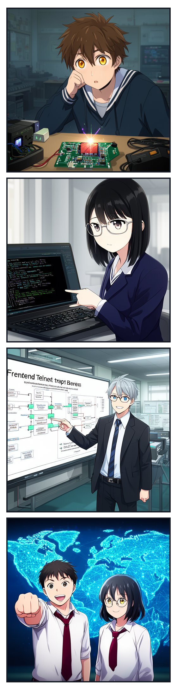
蜜壺が暴く暗黒生態系 〜吉岡研「IoTPOT」とIoTマルウェアの進化〜
学習テーマ: 横浜国大SPIRAL吉岡克成教授、IoTPOT、異種CPUアーキテクチャ（ARM/MIPS）サンドボックス、IoTマルウェア生態系解明、脅威インテリジェンス
小説と図解を読む →闇夜の反射鏡を砕け 〜ダークネットとDNSアンプ攻撃事前観測〜
学習テーマ: 横浜国大SPIRAL牧田大佑准教授・吉岡克成教授、情報処理学会特選論文、DNSアンプDDoS、UDP送信元IP偽装、ダークネット事前探索スキャン相関分析
小説と図解を読む →量子の嵐と格子の盾 〜四方研究室と耐量子計算機暗号数理〜
学習テーマ: 横浜国大SPIRAL四方順司教授（NexCrypt）、ショアのアルゴリズム、耐量子計算機暗号（PQC）、格子暗号（ML-KEM/ML-DSA）、HNDL脅威、匿名同報認証、集約MAC
小説と図解を読む →賢者の檻と化かす影 〜LLMが暴くサンドボックス回避の迷宮〜
学習テーマ: 横浜国大SPIRAL伊藤曜助教・吉岡克成教授、CSS 2025 ICSS研究賞、マルウェアのサンドボックス検出・環境擬態（Evasion）、LLMによる設定アーティファクト自動探索・自律的耐性強化
小説と図解を読む →身代金ビジネスの暗雲 〜LockBit 3.0の脅迫ライフサイクルと国際捜査の追跡〜
学習テーマ: 横浜国大SPIRAL吉岡克成教授・インミンパパ特任准教授、RAID 2025、LockBit 3.0、RaaS、二重脅迫（DLS）、Tor交渉ログ追跡、国際捜査Operation Cronosへの対抗動態、サイバー犯罪学
小説と図解を読む →届かぬ警告と目覚める砦 〜大規模IoT診断サービス「Am I Infected?」の真実〜
学習テーマ: 横浜国大SPIRAL佐々木貴之准教授・吉岡克成教授・松本勉上席特別教授、USENIX Security 2025、「Am I Infected?」、NOTICE、ヒューマンファクター（難解UI・パッチ手順・EOL）、Secure-by-Design
小説と図解を読む →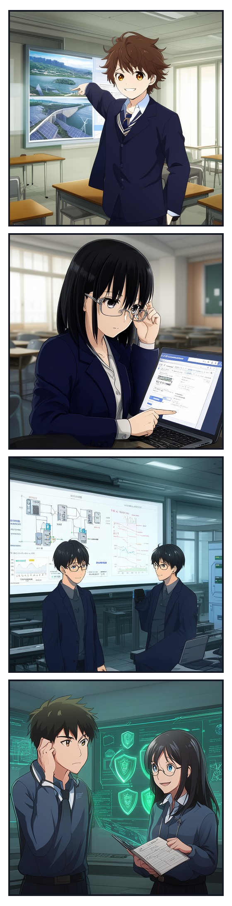
潜む裏口と社会インフラの防壁 〜制御システム遠隔管理機器の死角を暴け〜
学習テーマ: 横浜国大SPIRAL佐々木貴之准教授・吉岡克成教授・松本勉上席特別教授、IEEE S&P 2022、重要インフラ遠隔管理WebUIゲートウェイ露見、従来ICSスキャンの死角、13件のゼロデイ、責任ある開示（58%是正）
小説と図解を読む →悪のIoTを浄化せよ 〜ISP隔離砦（Walled Garden）とMirai駆除の真実〜
学習テーマ: 横浜国大SPIRAL吉岡克成教授・松本勉上席特別教授、NDSS 2019 Distinguished Paper Award（最優秀論文賞）、Mirai除染実験、実網RCT、メール効果ゼロ vs Walled Garden隔離（14日で92%駆除）
小説と図解を読む →消えゆく足跡と鎖の記憶 〜DeFiトークン詐欺とオン・オフチェーン統合インテリジェンス〜
学習テーマ: 横浜国大SPIRALインミンパパ特任准教授・吉岡克成教授、NDSS MADWeb 2025、DeFiトークン詐欺・Rug Pull、オンチェーン×オフチェーン統合、DeFiIntelデータセット（3.2万トークン×55万データ）
小説と図解を読む →隠された扉と影の合言葉 〜マニュアルにない裏口（バックドア）の真実〜
学習テーマ: 横浜国大SPIRAL吉岡克成教授・佐々木貴之准教授・宮本岩麒氏ら、CSS 2025 エシカルプラクティス賞、市販IoT機器のマニュアル非記載Telnet/SSH調査、デバッグ残骸、ハードコード認証
小説と図解を読む →星の標識と消費者の砦 〜国家基準「JC-STAR」と安全の証明〜
学習テーマ: 横浜国大SPIRAL吉岡克成教授（技術審議委員長）、経産省・IPAの国家IoTセキュリティ適合性評価制度JC-STAR、星ラベル（★1〜★4）、レモンの市場克服、ファームウェアSCA解析
小説と図解を読む →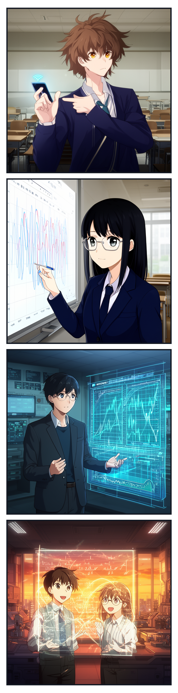
空間を翔ける乱数と量子の極致 〜電波の物理現象で紡ぐ破られない暗号〜
学習テーマ: 横浜国大SPIRAL四方順司教授（NexCrypt Lab長）、IEEE Access 2025、物理層セキュリティ（PLS）、電波フェージング・マルチパス秘密鍵生成（SKG）、量子アルゴリズム、情報理論的安全性
小説と図解を読む →潜入の影と倫理の光 〜Telegram犯罪捜査とインフォームド・コンセントのジレンマ〜
学習テーマ: 横浜国大SPIRAL吉岡克成教授・インミンパパ特任准教授・久保颯汰氏ら、CSS 2025、Telegram上の人的情報収集（HUMINT）、メンロレポート研究倫理、インフォームド・コンセントのジレンマ、倫理監視LLM
小説と図解を読む →
証明書なき星群と格子の絆 〜耐量子IDベース暗号と群テストの奇跡〜
学習テーマ: 横浜国大SPIRAL四方順司教授（NexCrypt Lab長）・佐藤慎悟氏、CANS 2024、超コンパクト耐量子有界共謀IDベース暗号（Compact Post-Quantum BC-IBE）、群テスト数理理論融合、PKI/CRL不要の証明書レス通信
小説と図解を読む →千の貌を持つ影と振る舞いの砦 〜生成AIマルウェア変種と動的防御の夜明け〜
学習テーマ: 横浜国大SPIRAL吉岡克成教授・インミンパパ特任准教授・松本勉名誉教授ら、ICSS / IEEE DSC 2024、生成AI（LLM）によるポリモーフィック変種量産とAV静的シグネチャ回避、動的挙動検知（振る舞い・EDR）へのパラダイムシフト
小説と図解を読む →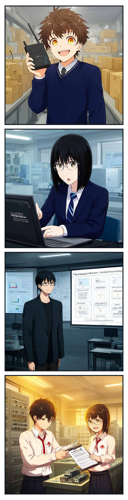
巡る古城と消えぬ記憶 〜中古ルーター流通とサポート終了の落とし穴〜
学習テーマ: 横浜国大SPIRAL佐々木貴之准教授・吉岡克成教授・新堀寛大氏ら、CSS 2025 学生論文賞、国内主要フリマにおけるサポート終了（EOL）中古ルーター流通、既知脆弱性放置、出品者初期化不徹底による設定残存
小説と図解を読む →闇市を支える蜘蛛の糸 〜ダークネットの外部依存性とLLMシグネチャ〜
学習テーマ: 横浜国大SPIRALインミンパパ特任准教授・吉岡克成教授・内野彰紀氏ら、CSS 2025、ダークネットマーケットの外部第三者サービス依存性調査、Tor Onionの単一障害点（SPOF）、LLMによるDOM自動解析とシグネチャ生成
小説と図解を読む →託された演算と選ばれし証 〜指定評価者付き準同型署名の奇跡〜
学習テーマ: 横浜国大SPIRAL四方順司教授（NexCrypt Lab長）・白石和真氏・原啓祐氏ら、IEEE Access 2025、クラウド計算委託における署名破壊ジレンマの克服、指定評価者付き準同型署名（HS-DE）、真正性と機密性の両立
小説と図解を読む →
見えざる牙と夜空の罠 〜ハニーポットと新規エクスプロイト分類の夜明け〜
学習テーマ: 横浜国大SPIRAL吉岡克成教授・インミンパパ特任准教授・佐々木貴之准教授・九鬼琉氏ら、CSS 2024 学生論文賞、ハニーポット観測による新規エクスプロイト自動分類、仮識別子付与と協調的脆弱性開示（CVD）
小説と図解を読む →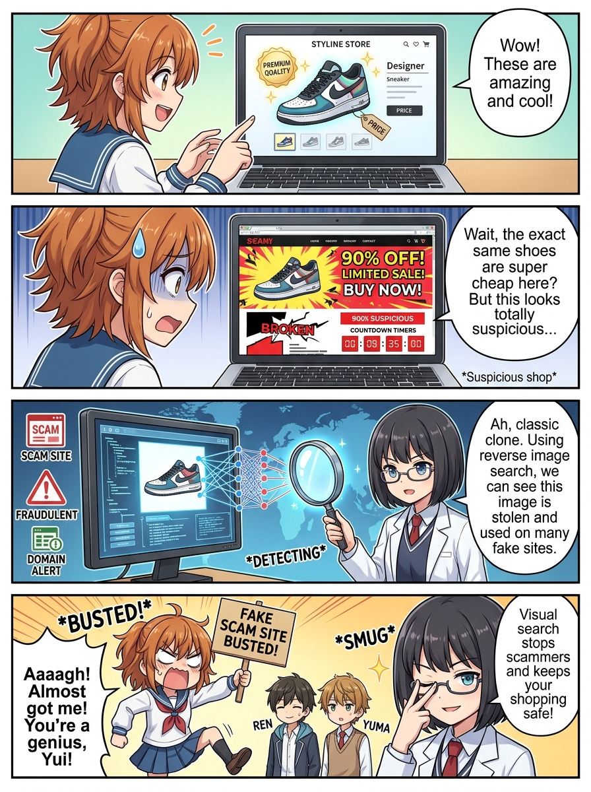
奪われた肖像と鏡の迷宮 〜画像逆引きで暴く偽ショッピングサイトの罠〜
学習テーマ: 横浜国大SPIRAL吉岡克成教授・長谷川深都穂氏・田辺瑠偉氏・藤田彬氏ら、CSS 2024 学生論文賞、正規ECサイトの商品画像を盗用・転載する偽ショッピングサイトの能動的画像逆引きクローリング手法
小説と図解を読む →
極小の鍵と俊敏なる猫 〜超軽量認証付き暗号「Manx」とIoTの鼓動〜
学習テーマ: 横浜国大SPIRAL四方順司教授（NexCrypt Lab長）・Alexandre Adomnicăi氏・峯松一彦氏ら、IEEE Internet of Things Journal 2024、超小型IoT機器・極短データ向け超軽量認証付き暗号方式「Manx」、最大2回のブロック暗号呼び出しとノンス再利用耐性
小説と図解を読む →